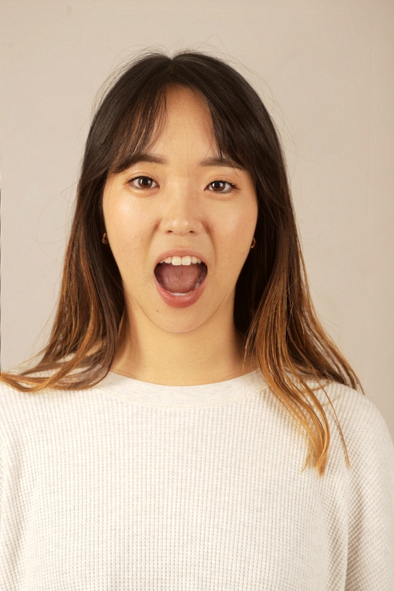
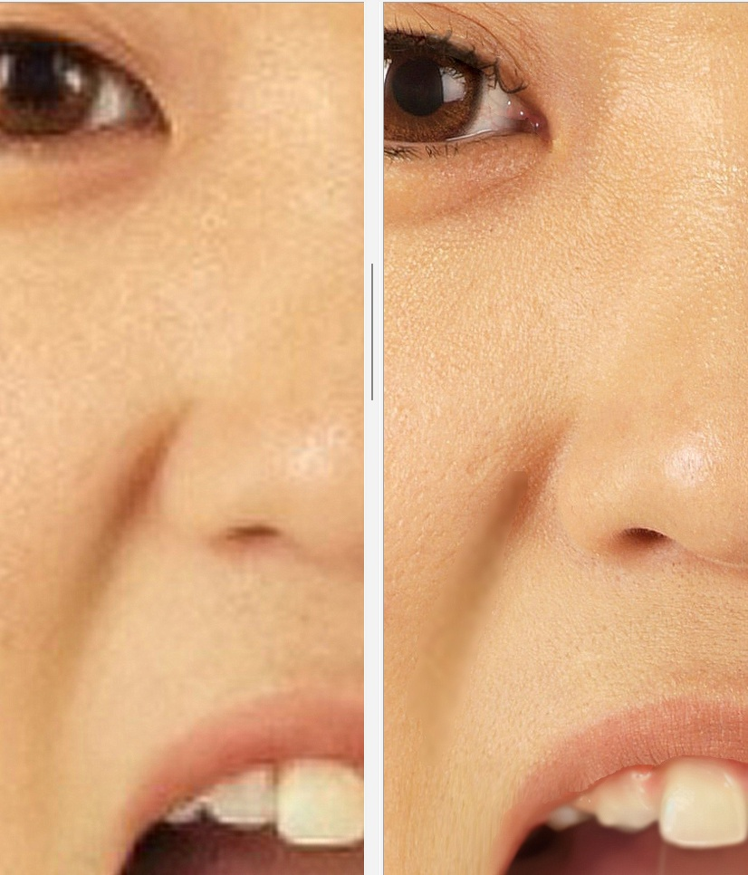
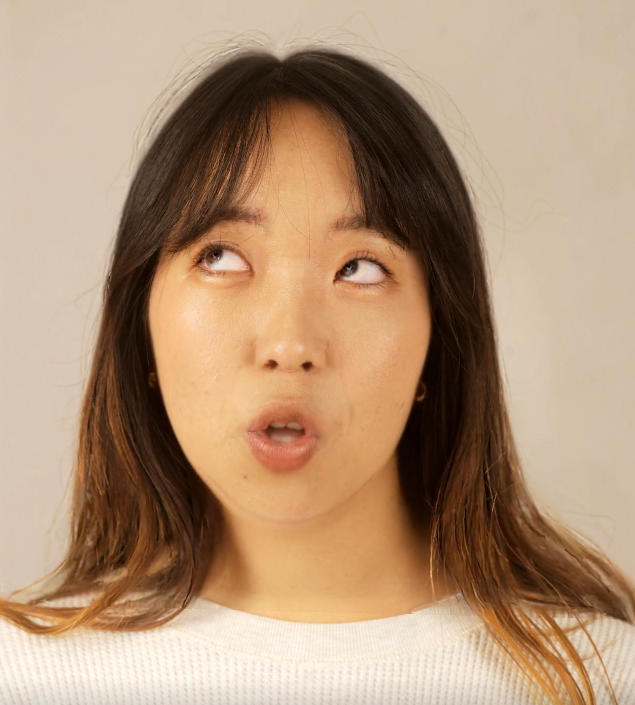

Image Results
Driving image and source image.
Output: left from LivePortrait, right ours. Click on a photo to see a larger version.
Notice the mask worked well to avoid picking up compression artifacts in the hair.


Video Results
The video output is more expressive because LivePortrait uses motion flow in the st-maps and influences the eyes considering the orientation of the pose, not the camera.
Please view in full screen mode, enable HD/4k in the settings (it will default to 720p) and view on your highest resolution large screen to appreciate the full detail.
click here to watch on YouTube 